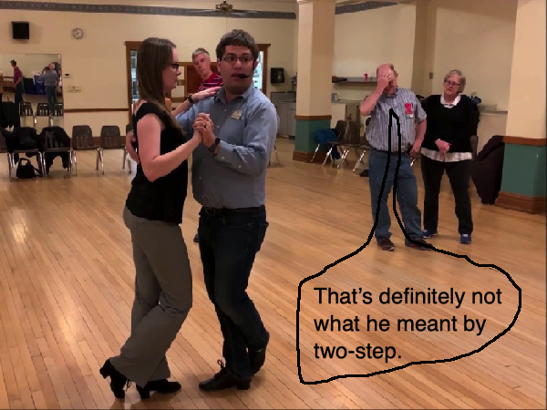

you smart good
Programming Concepts
Before review 3 . . .
I bet right now you're going, "hey, we didn't have a quiz for two-step conversions. What's the deal, bro!?"
Yeah... you right.
For this review, we are going to focus entirely on hexadecimal, which will include mostly two-step conversions.
After this review, we won't really see hexadecimal in this course. But it is important to understand how other base numbering systems work, which is why we spent so much time going over this.
I recommend reviewing the previous lessons if you are unsure about the steps of conversions.
But if you're ready, let's begin!
